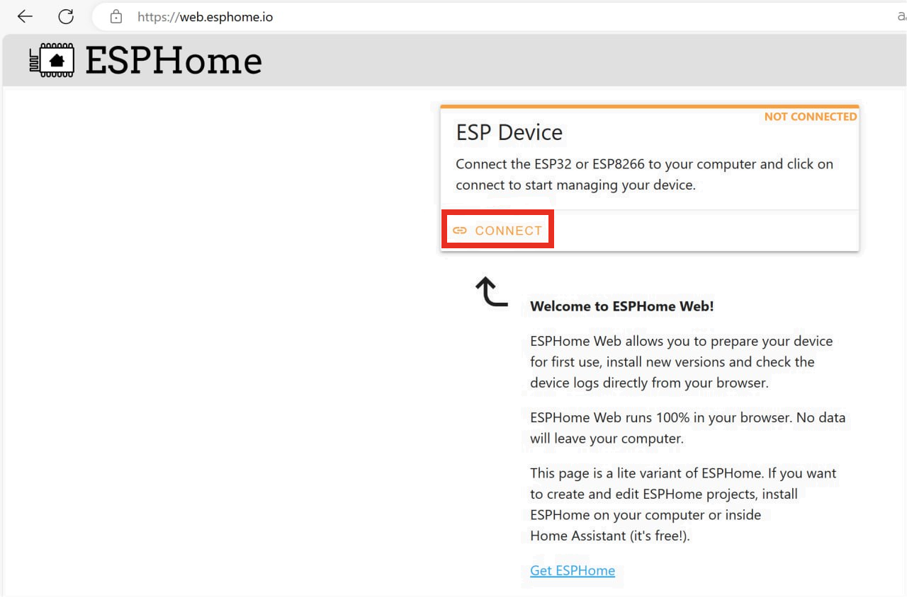
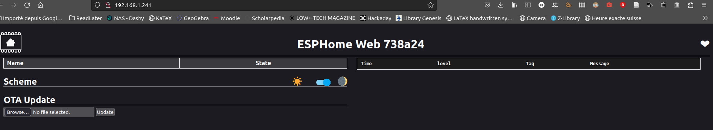
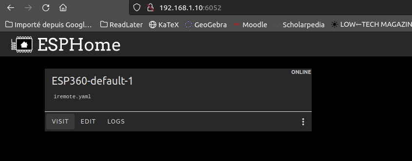
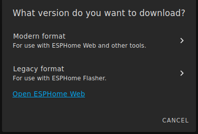
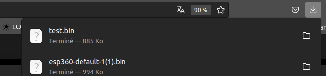
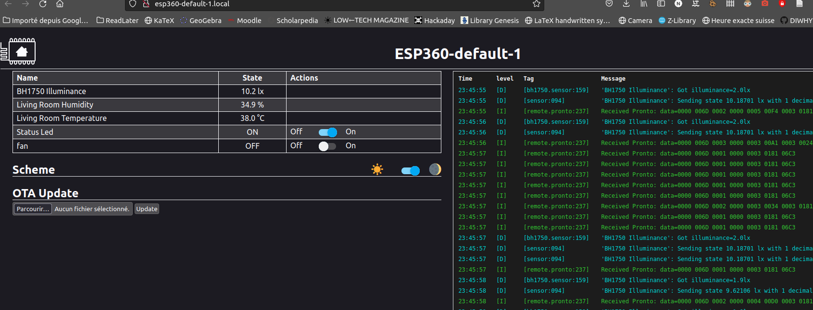
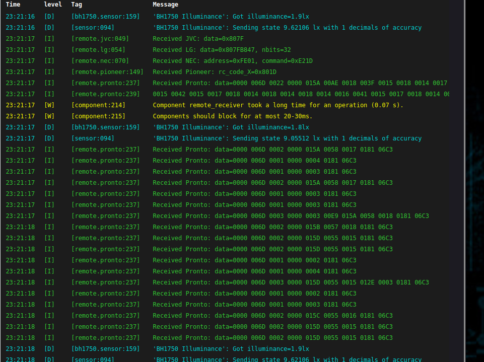

ESP-360-REMOTE
Installation guide
Introduction
To start, follow the quick start guide just for the installation part.
If you know ESPHome, you can skip most of this document and just use the template in the ESPHome Configuration folder.
If you don’t know much about ESPHome this document will guide you through the installation process. If you need more information you can head to Discord and if you see something that is not clear enough, do not hesitate to make a pull request and improve the documentation for everybody.
First step
For this step you will require a USB-C cable that has power + data (a normal cable should but some cheap aliexpress cable only have the power wire and no data wire) and a computer with chrome or edge browser (no firefox) open the following link in your browser once the device is connected to your computer using the USB-C cable you need to click on “connect”.

Select the USB-Serial device, if no USB serial device appear, ensure your USB cable is good and that you have the CH240X driver (the tool give you the link to install the driver if needed)

Once you are connected you should be able to click there :

The process takes a few minutes and ask for your wifi credentials toward the end so that the device can connect to your network. once it’s done you should be able to access the webpage hosted by the ESP 360 Remote

As you can see it’s empty. this is only the generic ESPHome configuration. follow to the next section to compile the firmware with the IR, RF and sensors feature
Now, if you want to change the yaml file and update your ESP 360 Remote directly from the command line, you can jump to the Command Line section, otherwise if you would like to manage your board from an intuitive web page, go to the ESPHome Environment one.
Command Line
First follow this guide that will help you install the compiler for the ESPhome firmware. ESPHome tool desktop installation. Now you can use the templates in the Template section and follow this guide (under the First uploading section) to compile the template provided here for your device : ESPHome tool desktop usage. You can now jump to the Template section
ESPHome Environment
This option require docker but allow you to manage in an easier way your fleet of esphome device

I assume you know the docker basics, here is a docker-compose.yml that you can use to run the ESPhome “fleet manager”
version: '3'
services:
esphome:
container_name: esphome
image: ghcr.io/esphome/esphome
volumes:
- /path/to/esphome/config:/config
- /etc/localtime:/etc/localtime:ro
restart: always
privileged: true
network_mode: host
environment:
- USERNAME=test
- PASSWORD=ChangeMeEdit the username + password and the path to your configuration (just an empty folder is good, we will create the file from the web interface)
Once it’s running you can can access it on http://127.0.0.1:6052/ From there you can create a new device

Once done, click on skip for the install and click “edit” instead from the main menu :
Replace the text with the one found in the ESPHome Configuration folder. as explained in the template section of this file once happy with your config you can compile by clicking save then come back to the main menu and click the “…” then install

Choose manual download

The file will be compiled to a .bin that you will be able to download. You need to download the legacy format :


From there, give it a name and choose ESP32

Now return to the webpage of the ESP 360 Remote and under OTA Update browse for the file you previously downloaded and click update once the device as rebooted, you should see the value from the sensors and your switch

you are done :)
Template
Here is what the template looks like. you can edit the name field and the wifi ssid + password with your
esphome:
name: esp360-default-1
friendly_name: ESP360-default-1
esp32:
board: esp32dev
framework:
type: arduino
# Enable logging
logger:
api:
encryption:
...You can add your own action. This is an example that send an IR code that turn ON and OFF a fan. You will need to adapt the transmit_nec function to your protocol and replace the address and command field accordingly
- platform: template
name: "fan"
turn_on_action:
remote_transmitter.transmit_nec:
transmitter_id: IR_TX
address: 0xFE01
command: 0xE21D
turn_off_action:
remote_transmitter.transmit_nec:
transmitter_id: IR_TX
address: 0xFE01
command: 0xE21DIf you don’t know these, you can start by compiling the base template and go to the webpage of the ESP 360 remote, you should see a terminal that display the data from the sensors and the IR + RF transceiver just point the remote you want to clone toward the ESP 360 remote and look at the code display in the terminal. It should looks like something like this :

The line that we care about is the following
Received NEC: address=0xFE01, command=0xE21DThis line give you the protocol (NEC) the address and the command. if you have another protocol lookup in the ESPhome documentation the specific syntax.
Edit the example template with your value and add as many as you need for every function of your remote you want to clone and use from the ESP 360 Remote.
(dont hesitate to read the ESPhome documentation as it will give you more detailed info and more options to configure your actions)